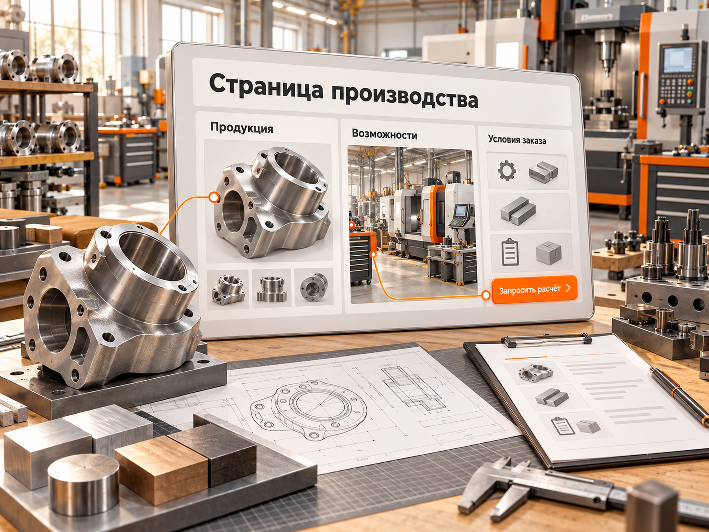
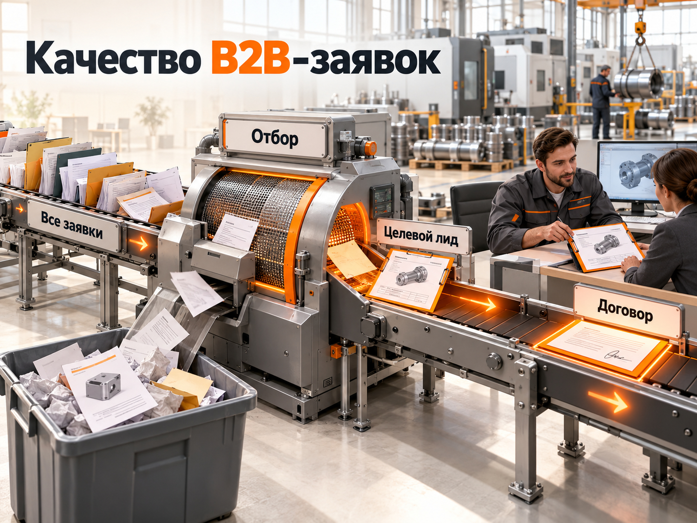
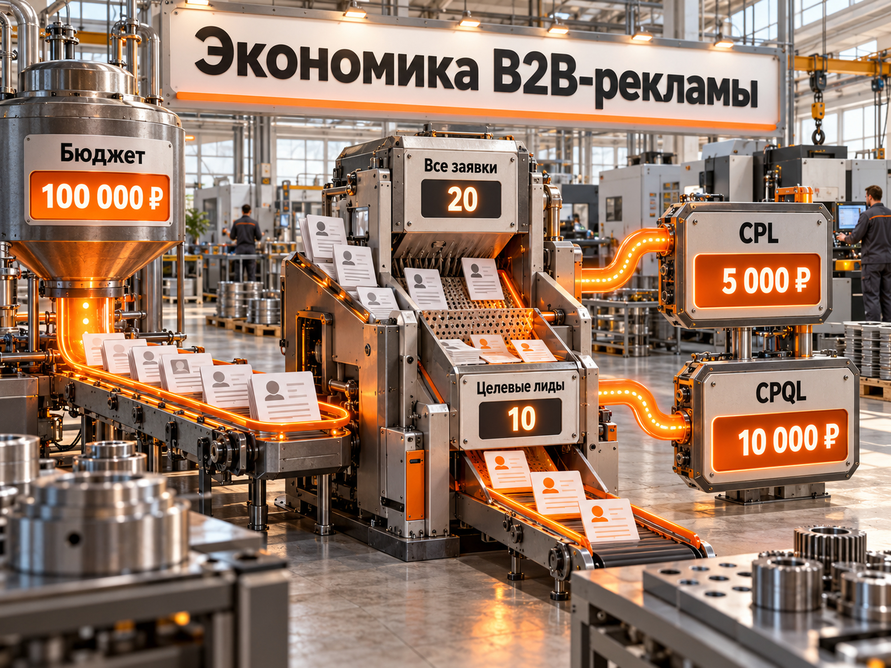
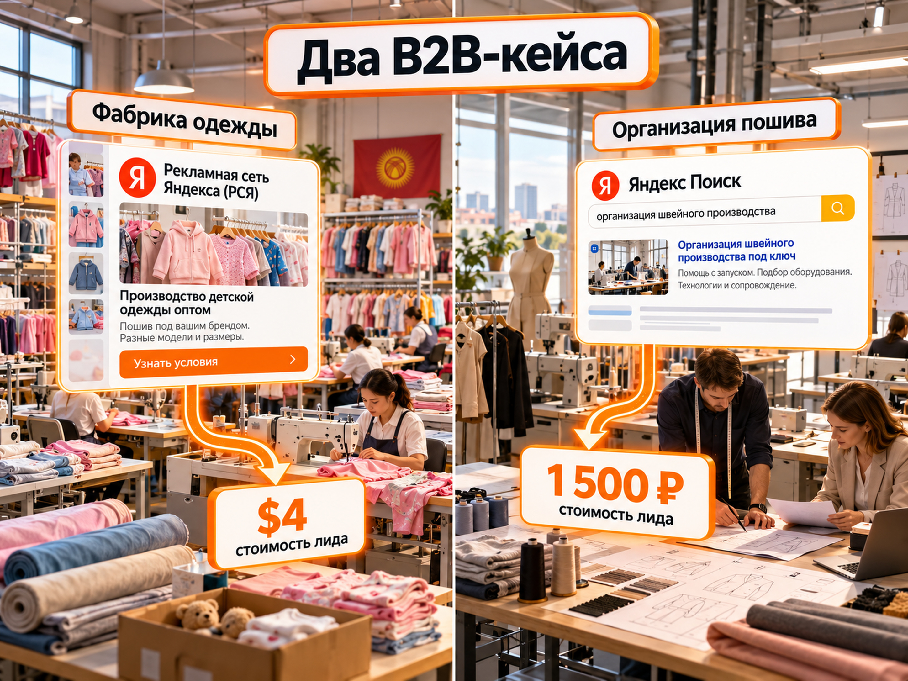

Блог о платном трафике
Яндекс Директ для производства: как получать целевые B2B-заявки
Яндекс Директ для производства помогает находить оптовых покупателей, заказчиков на изготовление продукции и компании, которым нужны производственные мощности. Для этого нужно разделить направления бизнеса, подобрать коммерческие запросы, подготовить посадочные страницы и настроить аналитику реальных обращений.
Главная особенность производственного B2B: результат рекламы определяется не количеством заявок, а тем, сколько из них превращается в подходящие заказы и договоры.
В одних нишах основной результат даёт Поиск Яндекса, в других эффективнее работает Рекламная сеть Яндекса (РСЯ). Выбор зависит от спроса, продукции, географии, бюджета и качества предложения.
Какие задачи производства можно решать через Яндекс Директ
Реклама производственного предприятия должна быть привязана к конкретной коммерческой задаче. Один завод может одновременно продавать готовую продукцию, выполнять индивидуальные заказы и искать партнёров для загрузки мощностей. Для каждой задачи нужны свои аудитория и предложение.
1. Привлечение заказов на изготовление продукции.
Подходит для металлообработки, производства деталей, мебели, упаковки, металлоконструкций и других изделий под заказ.
Потенциальный клиент ищет подрядчика, способного изготовить продукцию по чертежам, техническому заданию или заданным характеристикам.
2. Оптовая продажа готовой продукции.
Задача состоит в привлечении дилеров, магазинов, дистрибьюторов и корпоративных закупщиков.
Для таких клиентов особенно важны минимальная партия, ассортимент, наличие продукции, условия оплаты и поставки.
3. Загрузка отдельных производственных мощностей.
Предприятие может рекламировать конкретные услуги: лазерную резку, порошковую окраску, фасовку, контрактный пошив, изготовление деталей или сборку изделий.
Это позволяет направить рекламный бюджет на те мощности, которые предприятие хочет загрузить.
4. Проверка спроса на новое направление.
Яндекс Директ позволяет проверить, ищут ли потенциальные покупатели новый продукт, какие предложения вызывают интерес и сколько стоит получение обращения.
Но клики и заявки ещё не доказывают экономическую перспективность направления. Нужно оценивать, сколько обращений соответствует требованиям производства.
Если мощности ограничены, задача рекламы может заключаться не в максимальном количестве лидов, а в стабильном привлечении подходящих заказов.
Рекламные кампании должны соответствовать конкретным задачам и возможностям производства.
Что лучше для производства: Поиск или РСЯ
Поиск лучше подходит для привлечения сформированного спроса, а РСЯ помогает находить дополнительные аудитории и расширять охват. Но итоговую эффективность нужно сравнивать по квалифицированным заявкам, а не только по их количеству.
| Критерий | Поиск Яндекса | РСЯ |
|---|---|---|
| Аудитория | Уже ищет продукцию или подрядчика | Интересуется темой или может нуждаться в продукте |
| Тип спроса | Прямой коммерческий | Прямой и потенциальный |
| Основной инструмент | Поисковые запросы и объявления | Аудитории, креативы, предложения |
| Сильная сторона | Высокая конкретность запроса | Возможность расширить охват |
| Ограничение | Небольшой объём узкого спроса | Риск нецелевых обращений |
| Что оценивать | Стоимость квалифицированного лида | Стоимость и качество квалифицированного лида |
Когда начинать с Поиска
Если предприятие производит металлоконструкции, занимается лазерной резкой или принимает заказы на изготовление деталей, потенциальные клиенты могут непосредственно искать эти услуги.
В таком случае логично сначала проверить Поиск.
Особенно если рекламный бюджет ограничен, а прямых коммерческих запросов достаточно для получения статистики.
Когда подключать РСЯ
РСЯ полезна, если прямой спрос невелик, нужно найти новые аудитории или показать предложение предпринимателям, которые пока не выбирают подрядчика активно.
Например, владелец бренда одежды может интересоваться организацией собственного производства, но ещё не искать конкретную фабрику.
Объявление о контрактном пошиве способно привлечь такого клиента раньше, чем он начнёт сравнивать производителей в поиске.
Ретаргетинг также помогает повторно обратиться к посетителям сайта, которые изучали условия производства, но не отправили запрос на расчёт.
Вывод: нет правила, по которому для производства всегда лучше Поиск или РСЯ. Важнее доля подходящих лидов и стоимость их привлечения в каждом канале.
Поиск работает со сформированным спросом, а РСЯ позволяет расширять аудиторию потенциальных клиентов.
Как организовать рекламные кампании для производственной компании
Структура рекламы должна отражать реальные направления бизнеса и различия между клиентами.
Для предприятия, которое производит металлоизделия, первоначальная структура может выглядеть так:
| Направление | Что рекламировать | Посадочная страница |
|---|---|---|
| Изготовление деталей | Производство деталей по чертежам | Страница изготовления деталей |
| Металлоконструкции | Изготовление конструкций под заказ | Страница металлоконструкций |
| Лазерная резка | Резка металла по техническому заданию | Страница лазерной резки |
| Серийная продукция | Оптовые поставки изделий | Оптовый каталог |
Это пример смысловой структуры, а не требование создавать четыре самостоятельные кампании.
Если каждое направление получает мало обращений, чрезмерное дробление может мешать обучению автоматических стратегий.
Я бы сначала разделил принципиально разные предложения и места показа, а затем определил необходимое количество кампаний по объёму спроса и статистики.
Географию также нужно выбирать с учётом реальных возможностей предприятия. Если завод поставляет продукцию по всей России, ограничиваться городом нахождения производства может быть невыгодно.
При этом рекламировать доставку в регионы, которые предприятие фактически не обслуживает, нельзя.
Какие ключевые запросы использовать для рекламы производства
Семантика производственного предприятия должна включать не только название продукции, но и коммерческие действия, технологии, материалы, характеристики и условия заказа.
Например, для металлообработки можно рассмотреть следующие направления.
| Группа запросов | Примеры |
|---|---|
| Прямые коммерческие | изготовление деталей на заказ, металлообработка на заказ |
| По технологии | лазерная резка металла на заказ, токарные работы по чертежам |
| По продукции | изготовление металлических корпусов, производство кронштейнов |
| По формату сотрудничества | контрактное производство металлоизделий, серийное изготовление деталей |
| По географии | металлообработка Москва, изготовление деталей Ростов-на-Дону |
Наличие слова «купить» или «заказать» не является обязательным условием коммерческого спроса.
Инженер может искать продукцию по техническому обозначению. Закупщик может указывать название изделия и материал. Собственник предприятия может использовать более общую формулировку.
Поэтому запросы нужно оценивать по реальному намерению пользователя.
Какие запросы исключать
Для производственного предприятия часто бывают нецелевыми запросы, связанные с:
- вакансиями и трудоустройством;
- обучением профессии;
- самостоятельным изготовлением продукции;
- бесплатными чертежами и инструкциями;
- бытовыми ремонтными услугами;
- розничной покупкой одной единицы товара.
Но универсального списка минус-фраз нет.
Например, слово «чертёж» может встречаться и в информационном запросе, и в запросе на изготовление детали по чертежу. Исключать его целиком было бы ошибкой.
После запуска необходимо регулярно изучать фактические поисковые запросы, а не ограничиваться первоначальным списком ключевых слов.
Как писать объявления для производственного B2B
В объявлении нужно сразу сообщить, что именно производит предприятие и каким заказчикам подходит предложение.
Общие формулировки вроде «Высокое качество по доступным ценам» почти ничего не говорят закупщику.
Гораздо полезнее указать конкретный продукт, технологию, формат заказа или возможность получить расчёт.
Пример для металлообработки:
Заголовок: Изготовление деталей по чертежам
Текст: Металлообработка для предприятий. Отправьте техническое задание для расчёта стоимости.
Пример для контрактного производства:
Заголовок: Контрактное производство одежды
Текст: Организация пошива партий одежды для брендов. Обсудите модель, тираж и условия заказа.
Это примеры структуры сообщений, а не готовые объявления для конкретного предприятия. Перед запуском необходимо проверить ограничения формата и соответствие текста фактическим возможностям компании.
Если производство принимает заказы только от определённой партии или суммы, полезно указать это ограничение прямо в объявлении.
Часть нецелевых покупателей отсеется до перехода, и предприятие не будет оплачивать лишние клики.
Автотаргетинг и автоматические стратегии в Яндекс Директе
Автотаргетинг позволяет находить аудиторию без заранее заданных ключевых фраз. Яндекс анализирует объявления и посадочную страницу, сопоставляя их с запросами и интересами пользователей.
Для производственного бизнеса это одновременно возможность и риск.
Алгоритмы могут находить дополнительные релевантные запросы, но также приводить пользователей с неподходящими задачами.
Поэтому важно:
- Настроить категории автотаргетинга под реальные направления спроса.
- Подготовить объявления и страницы с точным описанием продукции.
- Регулярно проверять отчёт «Поисковые запросы».
- Исключать нерелевантные формулировки.
- Оценивать не только количество конверсий, но и качество обращений.
Какую стратегию выбрать
В производственных нишах часто используется стратегия «Максимум конверсий». Однако её эффективность зависит от объёма данных и корректности выбранной цели.
Согласно рекомендациям Яндекса, для обучения желательно выбирать цель, которая достигается не менее 10 раз в неделю. На первоначальное обучение стратегии может потребоваться 1‑2 недели.
Если предприятие получает лишь несколько заявок за месяц, оптимизация на редкую продажу может оказаться слишком сложной для алгоритма.
В такой ситуации можно тестировать оплату за клики, использовать достаточно частые, но осмысленные целевые действия и постепенно передавать данные о качестве лидов.
Оптимизировать рекламу только на простые действия вроде просмотра страницы опасно. Алгоритм может находить пользователей, которые охотно совершают это действие, но не становятся клиентами.
Подробный порядок технической настройки разобран в материале «Настройка Яндекс Директ для производства».
Какой должна быть посадочная страница производства
Посадочная страница должна помогать B2B-клиенту быстро понять, может ли предприятие выполнить его заказ, и дать возможность запросить расчёт.
Одна из распространённых ошибок - вести все рекламные объявления на главную страницу завода.
На ней могут одновременно находиться история компании, каталог, новости, сертификаты, десятки направлений и информация для соискателей.
Человеку, который хочет заказать конкретную продукцию, приходится самостоятельно искать нужные сведения.
Что показать на странице
Для производственного B2B полезны следующие элементы:
- Продукт или услуга. Что именно предприятие изготавливает и какие задачи решает.
- Производственные возможности. Технологии, оборудование, материалы и допустимые характеристики.
- Ограничения заказа. Минимальная партия, особенности исполнения, требования к техническому заданию.
- Условия сотрудничества. География поставок, порядок расчёта стоимости, сроки или условия их определения.
- Доказательства. Фотографии производства, образцы продукции, выполненные проекты, сертификаты при необходимости.
- Целевое действие. Запрос коммерческого предложения, отправка чертежа, расчёт партии или обращение к специалисту.
Необязательно публиковать фиксированную стоимость, если цена продукции зависит от технического задания.
Но важно объяснить, из чего формируется стоимость и какие данные нужны для расчёта.

B2B-клиент должен быстро понять, может ли предприятие выполнить его заказ.
В одном из моих проектов для фабрики детской одежды вместо общего многостраничного сайта использовали два отдельных лендинга: один под пошив на заказ, другой под готовую продукцию оптом.
Это были разные потребности покупателей, поэтому объединять их в одно предложение не имело смысла.
Как отличить целевой B2B-лид от нецелевой заявки
Квалифицированная B2B-заявка - это обращение потенциального покупателя, чьи потребности соответствуют продукции, условиям и возможностям предприятия.
Сам факт отправки формы ещё не означает, что обращение полезно.
Например, завод изготавливает металлические изделия серийно, а пользователь хочет заказать одну небольшую деталь для личных нужд.
Заявка реальная, но предприятие может не работать с подобными заказами.
Для квалификации полезно проверять четыре параметра:
- Продукт. Нуждается ли заказчик именно в том, что производит предприятие.
- Объём. Соответствует ли партия минимальным требованиям.
- Техническая возможность. Может ли предприятие изготовить изделие с нужными характеристиками.
- Коммерческие условия. Подходят ли география, сроки, бюджет и другие условия сотрудничества.
Не нужно заставлять посетителя отвечать на десятки вопросов до отправки обращения.
Для части производств достаточно запросить название продукции, примерный объём и контакт. Остальные подробности менеджер уточнит позднее.
При этом отдел продаж должен фиксировать не только причину отказа, но и статус перспективных обращений. Это позволит понять, какие рекламные кампании действительно приводят потенциальных заказчиков.
Аналитика Яндекс Директа: от заявки до договора
В производственном B2B нельзя оценивать рекламу только по данным о кликах и отправленных формах.
Сделка может включать техническую консультацию, расчёт, согласование образцов, переговоры, коммерческое предложение и заключение договора.
Поэтому в аналитике желательно учитывать несколько показателей.
| Показатель | Что показывает |
|---|---|
| CPL | Стоимость любого зафиксированного лида |
| Доля квалифицированных лидов | Сколько обращений соответствует требованиям предприятия |
| CPQL | Стоимость одного квалифицированного лида |
| Стоимость КП | Сколько стоит получение обращения, дошедшего до коммерческого предложения |
| CAC | Расходы на привлечение одного нового клиента |
| Выручка и маржа | Экономический результат полученных заказов |
CPQL рассчитывается по формуле:
CPQL = рекламные расходы / количество квалифицированных лидов.
Например, если предприятие потратило 100 000 ₽ и получило 20 обращений, обычный CPL составляет 5000 ₽.
Но если подходящими оказались только 10 обращений, стоимость квалифицированного лида составляет уже 10 000 ₽.
Это принципиальная разница для оценки рекламной кампании.
Как связать рекламу с CRM
Минимальная схема аналитики включает Яндекс Метрику, корректно настроенные цели и учёт фактических обращений.
Если предприятие использует CRM, стоит передавать туда источник заявки и фиксировать её дальнейший статус.
По возможности в Метрику и Директ нужно возвращать офлайн-конверсии, включая квалифицированные обращения и оплаченные заказы.
Яндекс поддерживает такую передачу через интеграции, API и Центр конверсий. Для сопоставления событий с рекламными визитами используются идентификаторы, в том числе ClientID, телефон и электронная почта.
Отдельное внимание стоит уделить звонкам и письмам.
Клик по телефону не равен состоявшемуся разговору. Нажатие на электронный адрес не доказывает, что человек действительно отправил техническое задание.
Поэтому при возможности нужно отслеживать реальные звонки, поступившие письма и обращения, а не только нажатия на контактные элементы сайта.

Не каждое обращение подходит производству, поэтому рекламу нужно оценивать по дальнейшим этапам сделки.
Подробнее этот процесс разобран в статье «Офлайн-конверсии в Яндекс Директе».
Сколько денег нужно на рекламу производства в Яндекс Директе
Универсального бюджета для производственной компании нет. Его нужно рассчитывать на основании спроса, стоимости клика, конверсии сайта и допустимых расходов на привлечение клиента.
При этом расходы на рекламу и стоимость услуг специалиста необходимо учитывать отдельно.
Для предварительного расчёта используются формулы:
Клики = рекламный бюджет / средняя цена клика.
Заявки = клики × конверсия сайта.
CPL = рекламный бюджет / количество заявок.
Пример расчёта рекламного бюджета
Предположим, производственная компания рассматривает тестовый бюджет 100 000 ₽.
Для расчёта возьмём условную среднюю цену клика 100 ₽, конверсию сайта 2% и долю подходящих заявок 50%.
| Показатель | Расчёт |
|---|---|
| Рекламный бюджет | 100 000 ₽ |
| Средняя цена клика | 100 ₽ |
| Ожидаемые переходы | 1000 |
| Конверсия в заявку | 2% |
| Все заявки | 20 |
| CPL | 5000 ₽ |
| Доля квалифицированных лидов | 50% |
| Квалифицированные лиды | 10 |
| CPQL | 10 000 ₽ |
Если из 10 квалифицированных обращений в покупку переходят 20%, расчётный результат составит две сделки.
Тогда стоимость привлечения одной сделки по рекламным расходам составит:
100 000 / 2 = 50 000 ₽.
Это условная математическая модель, а не средняя стоимость рекламы производства в 2026 году. В реальной узкой нише объём спроса может не позволить получить 1000 переходов за выбранный период. Конверсии и продажи также могут существенно отличаться от расчётных.

Условный расчёт показывает, почему стоимость обычной заявки и квалифицированного лида необходимо оценивать отдельно.
Как определить допустимую стоимость заявки
Правильнее начинать не с цены клика, а с экономики сделки.
Допустим, предприятие получает с заказа 200 000 ₽ маржинального дохода до вычета расходов на привлечение клиента и готово направить на рекламу не более 25% этой суммы.
Тогда допустимая стоимость привлечения клиента составит:
200 000 × 25% = 50 000 ₽.
Если в сделку превращается 10% всех полученных заявок, допустимый CPL составит:
50 000 × 10% = 5000 ₽.
Но эту модель необходимо пересчитывать по реальным данным CRM: среднему объёму заказа, маржинальности, повторным продажам и фактической конверсии.
Для предварительной оценки спроса и бюджета можно использовать прогноз бюджета Яндекс Директа. Подробный разбор планирования рекламного теста представлен в статье «Контекстная реклама для производства».
Реальные кейсы Яндекс Директа для производства
В моих проектах из близких производственных ниш были ситуации, когда лучший результат показывали разные рекламные каналы.
Эти результаты полезны для понимания механики продвижения, но их нельзя считать средней стоимостью B2B-лида в 2026 году.
Фабрика детской одежды: основной результат из РСЯ
Производство находилось в Кыргызстане и работало с двумя направлениями:
- пошив детской одежды на заказ;
- оптовая продажа готовой продукции.
Для направлений использовали отдельные посадочные страницы.
По итогам кампаний за период с 12 декабря 2024 по 12 марта 2025 года получили 173 заявки при расходе $1032,40.
Основной объём обеспечили РСЯ и автоматизированные кампании, в которых стоимость заявки составляла около $4.
Поиск по пошиву одежды давал заявки примерно по $13,15. А поиск по готовой продукции со склада оказался значительно дороже: около $45 за обращение.
В результате разные предложения требовали разного распределения бюджета между каналами.
Подробный кейс фабрики детской одежды.
Организация швейного производства: основной результат из Поиска
Во втором проекте компания помогала брендам и предпринимателям организовать производство одежды под ключ.
География продвижения: Москва и Московская область.
При рекламном бюджете около 4000‑5000 ₽ в день основной результат давали поисковые кампании.
Наиболее стабильная поисковая кампания приносила обращения примерно по 1500 ₽. В целом стоимость заявок в проекте находилась приблизительно в диапазоне 1500‑3000 ₽.
Здесь прямой спрос оказался достаточно полезным, чтобы сконцентрировать бюджет на Поиске, а не распределять его между множеством рекламных инструментов.
Подробный кейс организации швейного производства.
Что показывают более свежие данные промышленного B2B
В опубликованном eLama 24 июня 2026 года кейсе агентства LoftyLab рассматривалась реклама стальных промышленных резервуаров.
За ноябрь 2025 - май 2026 года проект получил 222 обращения, из которых 153 были квалифицированными. Доля квалифицированных лидов составила 69%, а их средняя стоимость - 4011 ₽.
В этом случае квалифицированным считался контакт, который подтвердил интерес к продукции.
Этот пример полезен тем, что показывает стоимость именно проверенных обращений, а не всех форм и звонков подряд.
Но стоимость квалифицированного обращения в одной промышленной нише нельзя автоматически переносить на другое производство с иной экономикой, продукцией и географией.
Общий вывод из трёх примеров: рекламный канал, стоимость заявки и доля подходящих обращений зависят от конкретного бизнеса. Даже в близких производственных тематиках результаты могут существенно различаться.

Исторические результаты двух B2B-проектов показывают, что выбор рекламного канала зависит от конкретного предложения и спроса.
Как я подхожу к запуску Яндекс Директа для производства
Перед настройкой рекламы я разбираю не только рекламный кабинет, но и экономику предприятия.
Важно понять, какие направления производства выгоднее продвигать, какие заказы предприятие способно выполнять и какая стоимость привлечения клиента допустима.
Далее работа строится поэтапно.
- Анализ бизнеса и спроса. Изучаю продукцию, целевую аудиторию, конкуренцию, географию, ограничения и существующую рекламу.
- Проверка сайта и аналитики. Оцениваю посадочные страницы, предложения, цели Метрики и возможность учитывать качество обращений.
- Подготовка структуры рекламы. Разделяю направления спроса, подбираю ключевые фразы, настраиваю автотаргетинг и ограничения.
- Запуск кампаний. Выбираю Поиск, РСЯ или сочетание каналов с учётом бюджета и объёма спроса.
- Контроль качества трафика. Анализирую реальные запросы, площадки, объявления, стоимость и качество заявок.
- Оптимизация и масштабирование. Перераспределяю расходы в пользу направлений с подтверждённой экономикой.
Настройка рекламного кабинета не является конечной целью. Главная задача заключается в создании управляемого источника коммерческих обращений для предприятия.
Когда Яндекс Директ может не дать результата производству
Есть ситуации, в которых дополнительный рекламный бюджет не решит основную проблему бизнеса.
Нет конкурентоспособного предложения. Если условия предприятия существенно хуже альтернатив и это ничем не компенсируется, реклама не исправит ситуацию.
Сайт не объясняет продукт. Покупатель не понимает, какие изделия производит компания, с какими партиями работает и как получить расчёт.
Почти отсутствует спрос. Даже высокая доля рекламных показов не даст большого числа заявок, если потенциальных заказчиков очень мало.
Компания не обрабатывает обращения. Если менеджеры отвечают поздно, не запрашивают технические задания или теряют заявки, рекламные расходы будут неэффективными.
Неправильно выбрана цель оптимизации. Кампания может привлекать много дешёвых обращений от аудитории, которая никогда не станет заказчиком.
Бюджет распределён слишком широко. Несколько десятков направлений и кампаний при небольших расходах могут не получить достаточной статистики для оптимизации.
При наличии таких проблем сначала нужно определить их причины. Увеличивать бюджет без диагностики не стоит.
Главное: как получать B2B-заказы через Яндекс Директ
Для производственного предприятия Яндекс Директ может стать источником заказов на изготовление продукции, оптовых продаж и загрузки производственных мощностей.
Но эффективность зависит от нескольких условий:
- реклама продвигает конкретное направление бизнеса;
- Поиск и РСЯ выбираются по реальному спросу и результатам;
- объявления сразу показывают специфику предложения;
- посадочная страница объясняет производственные возможности;
- Метрика и CRM помогают отличать заявки от потенциальных заказчиков;
- рекламный бюджет рассчитывается с учётом маржи и конверсии в сделку.
Главный показатель для производства - не минимальная цена заявки, а стоимость привлечения подходящего клиента, который приносит предприятию прибыль.
Яндекс Директ следует оценивать именно по этому результату, а не по количеству кликов и обращений.